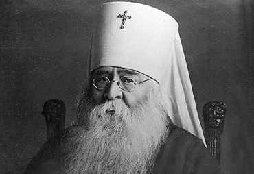
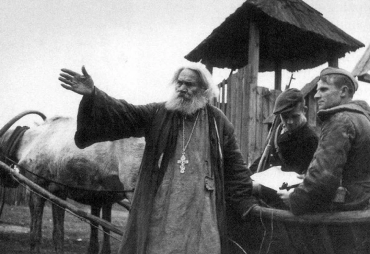
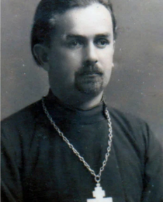

“…Но не первый раз приходиться русскому народу выдержать такие испытания. С Божьей помощью и на сей раз, он развеет в прах фашистскую вражескую силу. Наши предки не падали духом и при худшем положении потому, что помнили не о личных опасностях и выгодах, а о священном своем долге перед родиной и верой, и выходили победителями. Не посрамим же их славного имени и мы - православные, родные им и по плоти и по вере. Отечество защищается оружием и общим народным подвигом, общей готовностью послужить отечеству в тяжкий час испытания всем, чем каждый может.”
Последовательная политика атеизации, проводившаяся советским руководством на протяжении 1920–1930-х гг., привела к тому, что к началу Великой Отечественной войны большинство православных храмов на территории советской Беларуси были закрыты, а священнослужители репрессированы. К июню 1941 года на территории БССР насчитывалось 542 действующих православных храма. Все они находились в западной части Беларуси, первой почувствовавшей на себе адское дыхание войны.
Патриарший местоблюститель Сергий, митрополит Московский и Коломенский
22 июня 1941 г. в «Послании пастырям и пасомым Христовой Православной Церкви» патриарший местоблюститель Сергий, митрополит Московский и Коломенский, обозначил миссию священников в условиях войны как духовную поддержку верующих. Для этого священнослужители должны активно поддерживать мобилизацию населения на войну; утешать «огорченных», ободрять «малодушных»; напоминать о долге и воле Божьей «колеблющимся»; поддерживать православных воинов, чтобы они «жертвовали всем и самой жизнью» ради Родины.
Советское руководство понимало значение церкви в духовной поддержке народа в годы тяжелых испытаний. С началом войны прекратил свою деятельность «Союз воинствующих безбожников», а осенью 1941 г. возобновился выпуск всех религиозных изданий. Московская патриархия получила возможность обращения к народу напрямую с помощью радио и печати в целях поддержания морального духа и сплочения советского народа. В таких действиях особенно нуждались жители оккупированных немецко-фашистскими захватчиками территорий.
Германские власти разработали свою политику по отношению к Православной Церкви. Немецкое руководство решило использовать желание простых людей открыть храмы и возобновить в них богослужения в своих интересах. Оккупационные власти регламентировали время проведения богослужений, а также их длительность. Вся церковная недвижимость, в том числе и храмы, являлась собственностью Рейха и могла в случае необходимости использоваться в качестве тюрем, концлагерей, казарм, конюшен, сторожевых постов, огневых точек. При Генеральном комиссариате Беларуси был создан отдел политики, контролировавший деятельность белорусского епископата. От священников требовалось развернуть активную пропагандистскую деятельность против советской власти, тесно сотрудничать с немецкими органами безопасности, а также призывать население оказывать помощь германскому командованию в строительстве оборонительных сооружений и сдавать продовольствие для нужд германской армии. С 1942 г. священников обязали проводить работу по выявлению партизан.
Но надежды фашистов не оправдались. Священники были вместе со своим народом, который терпел ужасы оккупации. В храмах служились молебны за здравие односельчан, воевавших в Красной армии; проводились сборы продуктов питания и медикаментов для военнопленных; выдавались справки о неблагонадежности для сокрытия молодежи от угона в Германию. Православные храмы становились убежищем для партизан и бежавших военнопленных, а священнослужители часто становились связными партизанских отрядов. Немцы отвечали на патриотизм православного духовенства нещадной жестокостью. За содействие партизанскому движению, к примеру, только в Полесской епархии было расстреляно фашистами до 55 % всех священнослужителей.
К концу войны в пределах Беларуси насчитывалось 625 храмов и 3 монастыря. Некоторые исследователи даже считают, что их было чуть более тысячи. С 1941 по 1945 годы было рукоположено в священнический сан 213 человек. Белорусское духовенство приняло участие в сборе средств на построение танковой колонны Димитрия Донского, бронепоезда «Советская Белоруссия», самолетов для Красной армии, а также в единовременном сборе средств в помощь семьям фронтовиков, сиротам, раненым. Только начиная с 1944 года было собрано около 6 миллионов рублей. Сбор средств велся даже в период немецкой оккупации через партизанское командование и подпольные организации.
Священники продемонстрировали мужество, достойное подражания. Поэтому нет ничего удивительного, что в октябре 1943 года впервые в истории Советского Союза 12-ти священнослужителям были вручены высокие правительственные награды.
Более полувека прошло с тех пор, как закончилась великая трагедия, которую пережила наша Родина, - Великая Отечественная война. Однако и сегодня все то, что связано с этим драматическим временем, по-прежнему вызывает у людей неослабевающий интерес. Тема борьбы с фашизмом является одной из наиболее ярких и трагических страниц истории XX века, она стала темой многих научных исследований.
Изменилось время, изменилось отношение к прошлому. Достаточно долгое время считалось, что о войне уже все известно. Описывались героические поступки солдат, партизан, но некоторые вопросы ждали своего освещения. Так, относительно недавно стали обращать внимание на такое проблемный вопрос, как деятельность Православной церкви и православных священнослужителей на территории страны. Изучение этого аспекта истории Родины способствует росту патриотизма, чувства гордости за свою страну и ее представителей.
Самыми знаменитыми священники-патриоты являются два брата: Георгий и Николай Хильтовы. Полные автобиографические сведения установить достаточно проблематично. Сохранились воспоминания дочери о. Николая Киры, в которых она указывает, что отец братьев Хильтовых Иван Федорович умер еще в 1929 году. Он был священником Блячинской церкви. В семье Хильтовых было трое сыновей. Старшим был отец – Хильтов Николай Александрович, 1903 года рождения, мама Наталья Ивановна, 1907 года рождения. Дядя Георгий, 1905 года рождения и дядя Сима (Серафим), 1906 года рождения. Дедушка Хильтов жил вдовцом. Бабушка умерла в молодом возрасте от дизентерии.
Николай Александрович Хильтов был настоятелем церкви Иоанна Предтечи деревни Блячино (ныне Садовая), что в Клецком районе Минской области, с 1929 г. Дом священника стоял на краю деревни, но принцип «моя хата с краю» для семьи отца Николая никогда не был приемлем. С первых дней войны в дом священника по началу случайно, а затем целенаправленно стали заходить пробиравшиеся из окружения красноармейцы, возвращавшиеся с задания диверсионные группы, партизаны… Отец Николай никому не отказывал в помощи.
Семья священника вызывала у немцев мало подозрений. Тем не менее, ночные визиты партизан подвергали семью священника большой опасности. Бывали ночи, когда за только что ушедшими партизанами в дом стучались немцы или полицаи. Однако никто из родных не высказался за прекращение связей с партизанами. Постепенно дом на краю деревни стал одновременно и госпиталем, и базой отдыха, и штабом для диверсионных групп, и даже складом оружия и боеприпасов. Буквально под носом у фашистов отец Николай и его жена Наталья во время проповедей в церкви делились с односельчанами последними новостями с Большой земли.
Отец Николай постоянно помогал разведчикам бригады имени Василия Ивановича Чапаева, действовавшей в той же области. При церковном доме он создал «дом отдыха», где поправляли свое здоровье раненые и больные партизаны. Для того, чтобы не вызвать подозрения немцев о настоящих «отдыхающих», батюшка вместе с доверенными прихожанами распространяли слух о больных тифом, которые там якобы лечатся. Фрицы боялись этой смертельной болезни, а потому церковь отца Николая старались обходить стороной.
Доверяя отцу Николаю, командиры партизанских отрядов аналогично относились и к его брату Георгию, настоятелю Святопокровской церкви в Клецке. В доме отца Георгия проходили встречи партизан и завербованного начальника Клецкой полиции Гурина. Глава полиции также передавал через Георгия Александровича информацию о планируемых засадах, разведданные и даже оружие.
Н. А. Хильтов
В начале 1942 г. в Клецк перевезли группу воспитанников детского дома из Минска. Среди них было много евреев. Чтобы спасти детей, Григорий Хильтов крестил их, дал им христианские имена, назвал белорусами и выдал необходимые документы. Спасая других, Николай и Георгий Хильтовы сильно рисковали собственными детьми. Оба брата, а также их жены Наталья и Лидия верой и правдой служили своему народу. Ночью 6 апреля 1944 года за связь с партизанами братья Хильдовы были арестованы. Жены Наталья и Лидия отправились в Барановичи спасать мужей, но домой так и не вернулись. Все вместе они были отправлены в концентрационный лагерь «Колдычево»…
Позже о судьбе братьев-священников и их жен рассказал один из выживших узников лагеря. Николай Хильтов погиб в последние дни мая 1944 года. Палачи привязали его к железной кровати и, облив бензином, подожгли. Матушку Наталью, как и Лидию Хильтову, расстреляли. Георгий Хильтов погиб в ночь с 1 на 2 июля 1944-го, когда состоялся последний колдычевский расстрел.
Г. А. Хильтов
История победы в Великой Отечественной войне складывалась не только из великих битв. В первую очередь история Великой Победы – это миллионы историй человеческих судеб, многие из которых так и останутся неизвестными. Но время от времени нам отрываются новые имена скромных и очень смелых людей. Простых людей, но настоящих героев. Таких как братья Хильтовы. И имена эти навсегда останутся в памяти потомков.
Братья Хильтовы с семьями